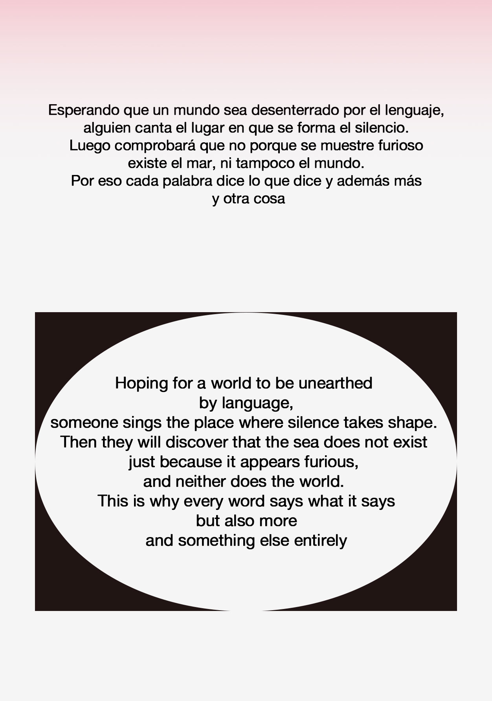
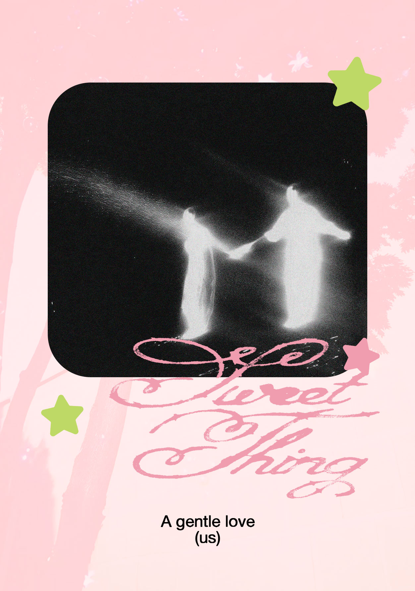
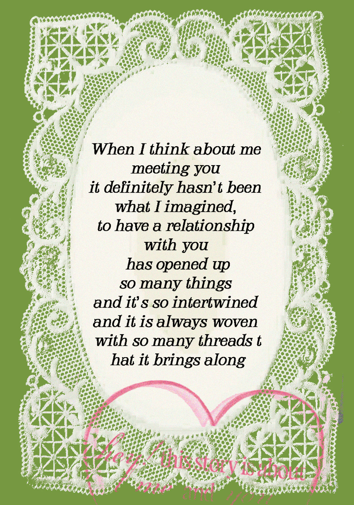
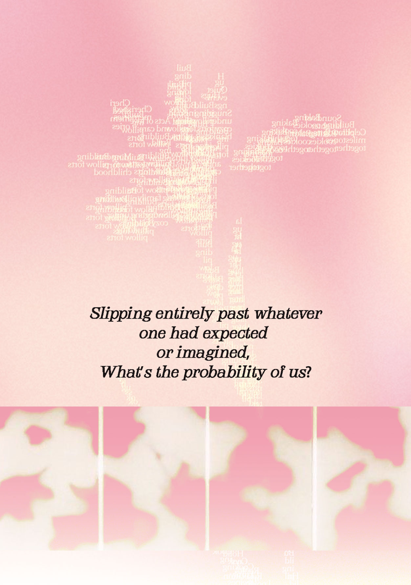
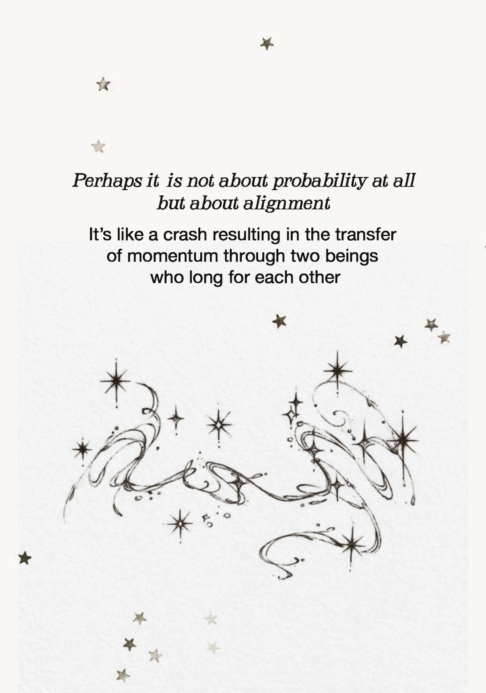
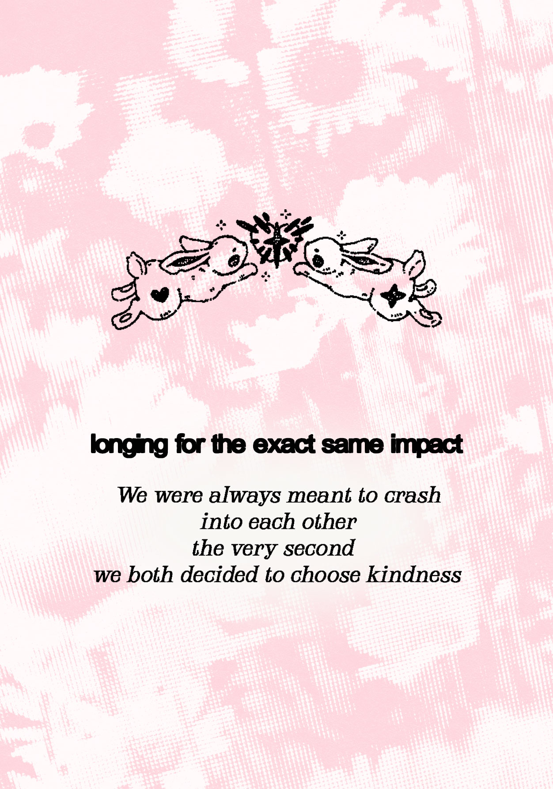
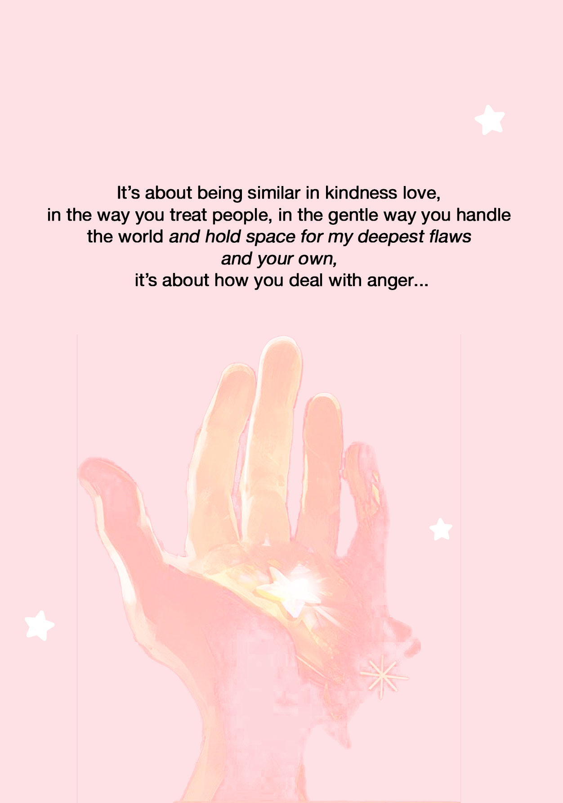
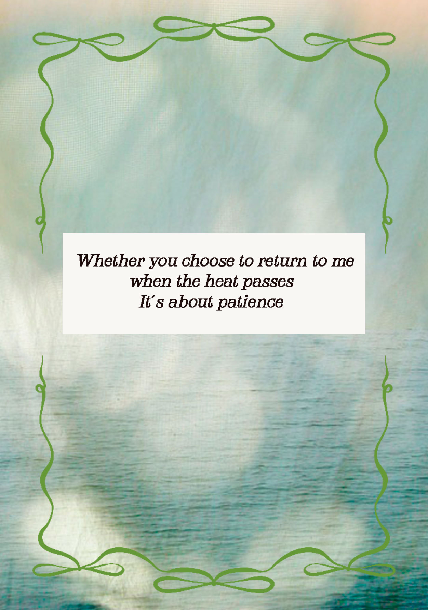
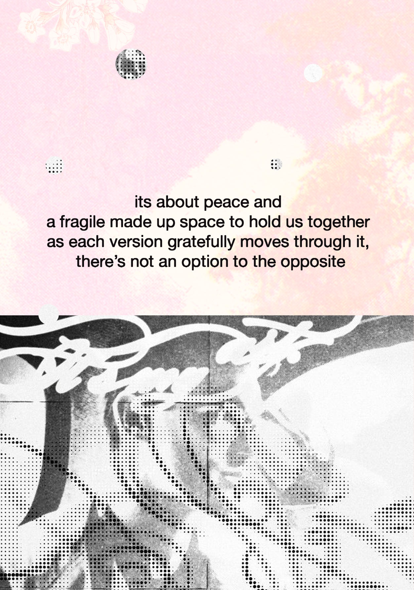
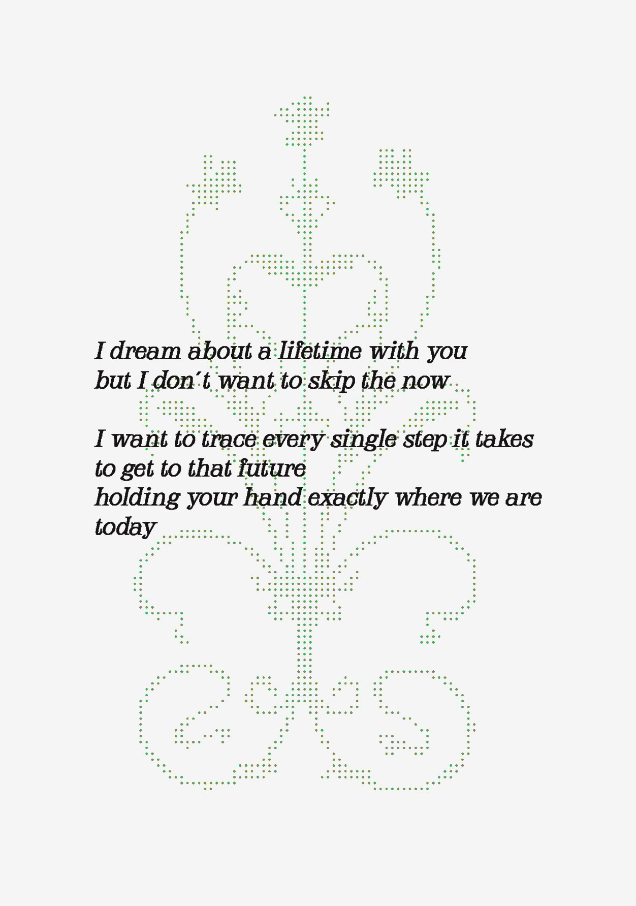

Это ты?
Извините, это не для тебя
Это ты?










I am choosing you, and I am choosing to stay. To make it a steady rhythm for both of us to clash and dissolve together, to grow, to love
I choose you in every single breath. Through every mile of distance, through the late night calls, through the laughter
I have chosen you every single day since we met. Now, I'm asking you to choose me back. Will you be my girlfriend?